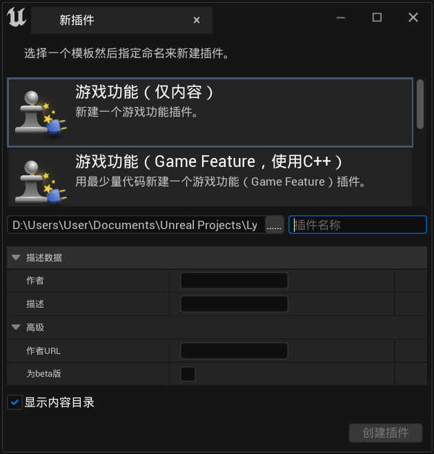

自定义内容模块
Lyra框架仍处于开发中, 所有直接的修改都是不推荐的
因为在版本更新之后文件改动的影响会变得无法预知
Lyra框架 推崇模块化, 那么解决方案也很简单
建立一个新层级来储存所有的自定义内容
这里的层级本质上就是 GameFeatures 功能
Lyra框架 默认开启了这个功能
添加插件
插件 > 添加 > 游戏功能(仅内容)
其他选项不用改, 只需要 输入名称 作为储存路径即可
名称其实随意, 也可以按 Shooter 示例项目的规则来命名 xxCore xxMaps

描述内容自己选填
配置文件
- 类型:
GameFeatureData
点击 创建插件 后会自动转到新建的插件配置文件
目前配置中不需要什么改动
插件属性
在配置文件中找到 细节 > Feature State > 初始状态
点击 编辑插件 会弹出 插件属性 窗口
这里可以看到插件的描述和依赖配置
描述信息
属性中的 细节 和 Icon 项目基本只作为插件描述
对插件使用没有太多影响
插件状态
可以仿照
Shooter和TopDownArena的配置文件
将 初始状态 切换为 已注册具体作用还没测试(也许是有用的
找到 Game Featers > 初始状态 项, 切换为 已注册
点击 确定 保存修改
依赖性
从资源管理角度来理解, 插件可以访问主目录 Content/ 下的所有资源
但插件之间默认是隔离的, 调用未声明的依赖将会导致错误
打开
ShooterMaps的配置文件
可以看到它的依赖指向了ShooterCore
而在
ShooterCore的配置中, 依赖指向了各种功能插件当前插件依赖范围仅限直接指向的插件内容

启用插件
配置文件和属性修改好之后不能直接继续进行后续开发
需要让UE工程环境拿到更新
首先需要 重启本项目
然后进入 插件 > 项目 > GameFeatures
这时看到新建的插件变成了 未勾选 的状态
重新 勾选 它
这时会告知
点击 立即重启
又重启了一次
这样插件就是可用状态了